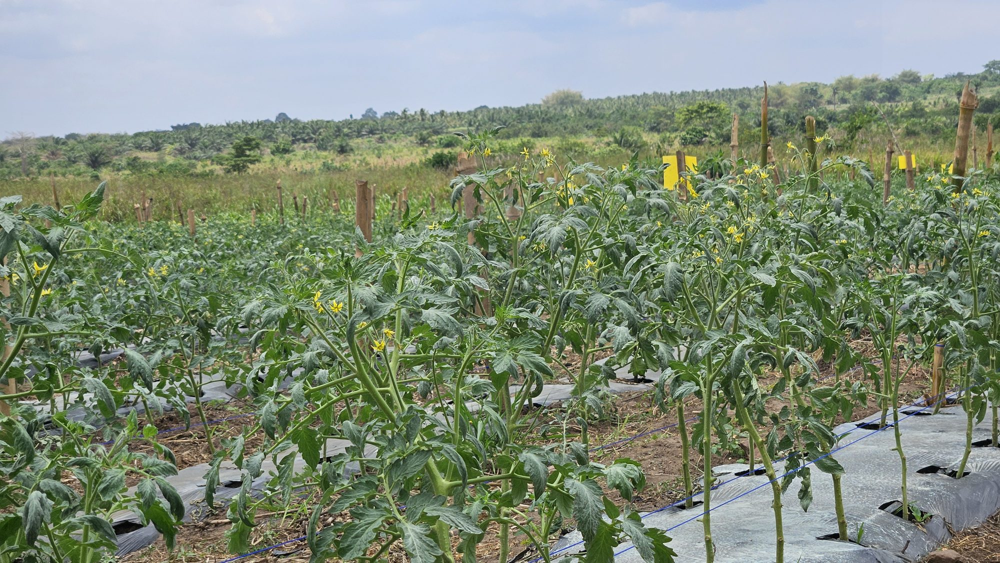
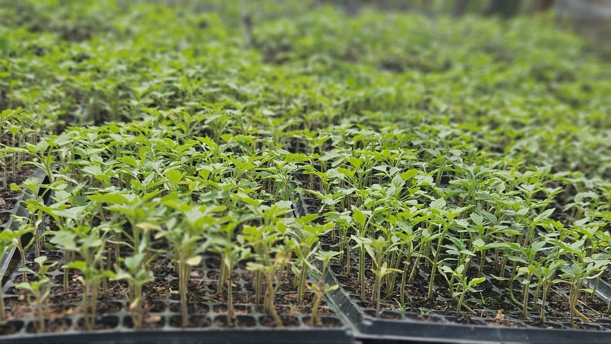
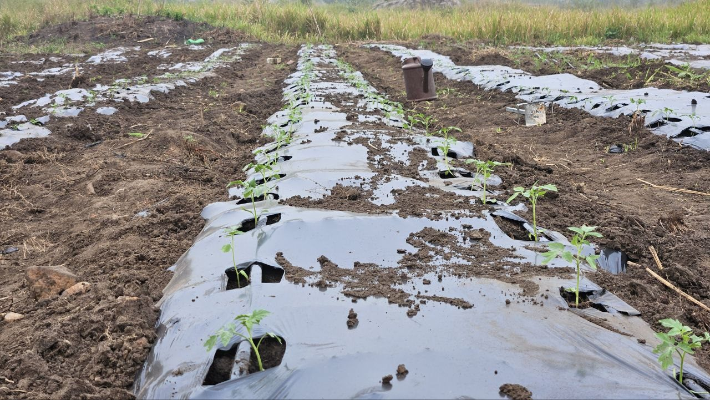
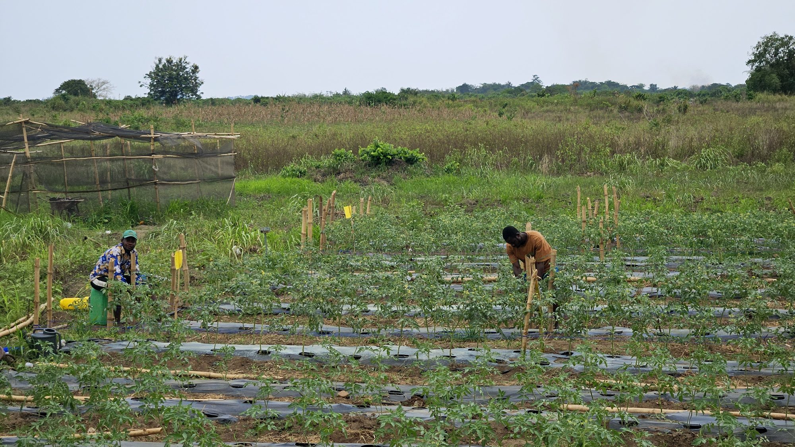
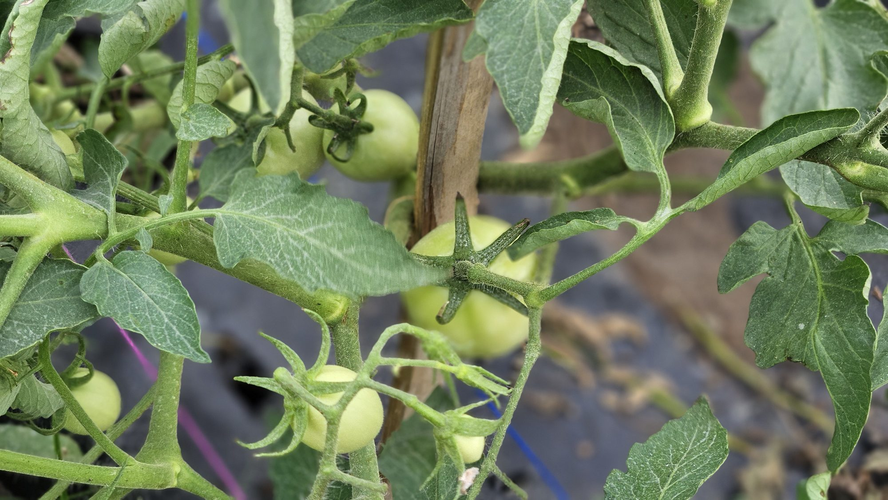
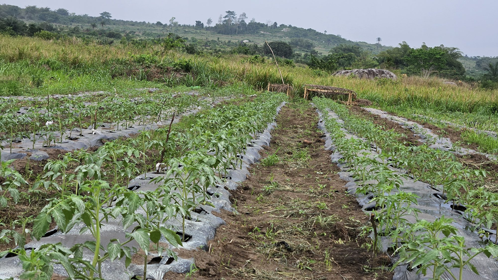

About
From smallholder plots to precision agriculture
I'm an early-career agricultural researcher with hands-on experience across nursery management, integrated pest control, dairy farm technology, and precision irrigation. My work sits at the intersection of traditional farm management and digital tools — using Python, MATLAB, GenStat, AquaCrop and machine learning to turn field data into better decisions.
I studied Agriculture at the University of Cape Coast, where my thesis examined how drip irrigation and plastic mulch affect tomato growth, yield and water-use efficiency. That question is now taking me to Italy, where I'll be researching UAV and remote-sensing-based precision irrigation for my Master's in Sustainable Water and Land Management in Agricultural Ecosystems.
Alongside research, I founded and run Elibeth Farms in Kasoa, and currently serve as Senior Agronomist and General Farm Manager at Pascoe's Field — work that keeps my research grounded in the realities of running a farm.
Experience
Where the work has happened
Feb 2026 — Present
Senior Agronomist / General Farm Manager
Pascoe's Field · Ghana
- Increased crop productivity 25–35% by designing climate-smart production systems across greenhouse and open-field operations.
- Cut chemical pesticide use 20–40% while improving crop health through integrated pest and disease management.
- Led field trials and applied data analytics (AquaCrop, Python, Excel) to lift decision-making efficiency by 30%.
- Drafted and reviewed business proposals and agreements, improving partnership execution efficiency by 30%.
- Contributed to grant and investment applications with a 40–60% success rate.
Nov 2024 — Present
Farm Manager & Founder
Elibeth Farms · Kasoa, Ghana
- Directed nursery management and pest/disease control, cutting seedling mortality by 25%.
- Drafted 5+ MOUs and contracts with partner businesses, securing 3 long-term collaborations.
- Led training workshops for 50+ local farmers, lifting adoption of climate-smart practices by over 60%.
- Introduced sensor-based soil monitoring and precision irrigation, cutting water use by 30%.
- Won two funding opportunities worth $9,000+ at national and regional pitch competitions.
May 2023 — Nov 2024
Farm Management Intern
Neils Henrik Norgaard Dairy Farm · Farup, Denmark
- Used SmartDairy technology to track milk yield, feed intake and cow activity, catching 95% of health anomalies early.
- Improved heat-detection accuracy by 30% using sensor-based breeding apps.
- Diagnosed and treated livestock disease, cutting incidence by 25% and vet costs by 10%.
- Ran lab analysis on 200+ milk samples, improving quality-compliance recommendations by 90%.
- Managed feeding and care for 50+ calves with a 95% survival rate.
May 2021 — Aug 2021
Research Assistant
Fountain Foods · Cape Coast, Ghana
- Monitored pepper farm health and implemented weed control, reducing crop damage by 20%.
- Processed cassava and plantain into flour and pepper into powder for value-added products.
- Developed a low-cost cassava-waste feed substitute, cutting maize dependency by 30%.
Feb 2020 — Jan 2021
Class Instructor
Mozano Senior High School, Ghana Education Service · Gomoa Tarkwa, Ghana
- Taught General Agriculture, Animal Husbandry, Mathematics and Integrated Science to 50+ students, lifting average test performance 25%.
- Designed lesson plans linking STEM and agricultural science; 80% of students reported improved understanding.
In the Field
Nursery to harvest






Education & Research
Study and thesis work
MSc. Sustainable Water and Land Management in Agricultural Ecosystems
Research focus on UAV and remote-sensing-based precision irrigation — integrating thermal imagery, vegetation indices, evapotranspiration and soil-moisture sensing with machine learning to improve crop-water management.
B.Sc. in Agriculture
Thesis: Effect of Drip Irrigation and Plastic Mulch on Tomato Growth, Yield, and Water Use Efficiency — improved water-conservation efficiency by 20% without yield loss.
Academic Projects
Varietal trials on Cobra 34 and Mona F1 tomatoes under drip irrigation; yam and sweet potato performance under mixed soil treatments; maize–cowpea intercropping to cut fertilizer use by 20%; cassava-waste feed processing for smallholder farmers.
Selected Training & Fellowships
African Food Changemakers programs on agribusiness value chains, leadership, innovation and climate-smart approaches; Water Harvesting Systems and Sustainable Agriculture capacity-building at UCC; BRACE resilience program.
Awards, Honors & Fellowships
Recognition along the way
-
2025
Tony Elumelu Foundation Fellowship — $5,000
Supported an integrated farming system approach to improve sustainable agriculture, biodiversity and farmer training.
-
2025
Ghana Climate University Network (GCUN) Project Fellowship — $4,500
Funded eco-friendly snail rearing as a climate-smart, alternative protein source for consumers and diabetic patients.
-
2024
Grace Station Foundation Scholarship
Undergraduate tuition award for a promising young agricultural scientist.
-
2024
Dean's Award for Academic Excellence, 2022/2023
Awarded for outstanding performance in the agricultural sciences.
Contact
Let's talk agriculture, research, or a farm project.
- Email — pquansah@stu.ucc.edu.gh
- Phone — +233 59 342 6082
- Location — Kasoa, Ghana
- Download full CV (PDF)